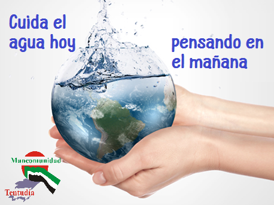
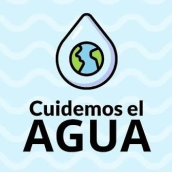
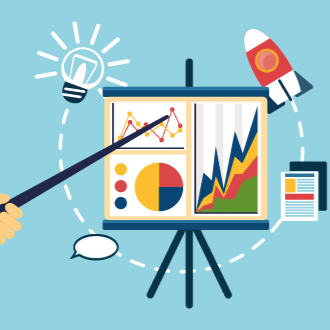
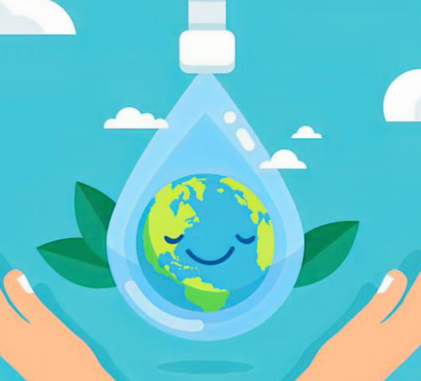
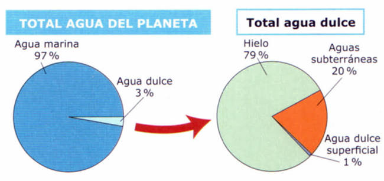

👥 ¿Quiénes somos?
Somos Yaku Quispichkuna, un equipo conformado por cinco estudiantes: Alessandro Aquino, Dylan Orellana, Eithan Ordosgoitti, Matias Ruiz y Gabriela Puma. Nuestro nombre representa nuestra misión: promover el cuidado del agua mediante la innovación, la tecnología y la participación de la comunidad educativa.
Nuestro propósito es crear conciencia sobre la importancia de utilizar el agua de manera responsable, demostrando que pequeños cambios en nuestros hábitos pueden generar grandes beneficios para nuestro planeta.
A través de este museo digital buscamos compartir información, presentar nuestra propuesta tecnológica y motivar a más personas a formar parte del cambio hacia un futuro más sostenible.
💧 Sala 2: La importancia del agua

El agua es uno de los recursos más importantes para la existencia de la vida. Todos los seres vivos dependen de ella para sobrevivir, desarrollarse y mantener el equilibrio de los ecosistemas. Sin agua no sería posible la vida en nuestro planeta.
Aunque gran parte de la Tierra está cubierta por agua, la mayoría es agua salada y no puede ser utilizada directamente por las personas. Por eso, el agua dulce disponible para nuestro consumo es un recurso limitado que debemos proteger.
En nuestra vida diaria utilizamos agua para actividades esenciales como beber, preparar alimentos, realizar nuestra higiene, producir productos y mantener limpios nuestros espacios. Sin embargo, muchas veces no somos conscientes de la cantidad que utilizamos y de la importancia de cambiar nuestros hábitos.
Cuidar el agua no significa dejar de utilizarla, sino aprender a usar solamente la cantidad necesaria. Cada acción responsable, por pequeña que parezca, contribuye a conservar este recurso para las futuras generaciones.
Sala 3: El problema del uso irresponsable del agua

Actualmente, uno de los mayores desafíos relacionados con el agua es la falta de conciencia sobre su uso adecuado. Muchas personas utilizan este recurso sin considerar que cada acción diaria influye en su conservación.
En las instituciones educativas, hogares y diferentes espacios de la sociedad, existen hábitos que pueden generar un consumo innecesario de agua. La falta de información y educación ambiental provoca que muchas veces no valoremos la importancia de este recurso.
El problema no solamente está relacionado con la cantidad de agua que utilizamos, sino también con nuestra actitud frente a ella. Si no aprendemos a gestionar y controlar nuestro consumo, podemos afectar la disponibilidad de este recurso en el futuro.
Por esta razón, consideramos necesario crear herramientas que ayuden a las personas a conocer mejor sus hábitos de consumo y motivarlas a tomar decisiones más responsables.
Sala 4: Nuestra propuesta - Water Counter

Para enfrentar esta problemática desarrollamos nuestra propuesta llamada Water Counter, una solución tecnológica creada para promover la conciencia sobre el consumo de agua.
Water Counter busca que los usuarios puedan conocer y reflexionar sobre la cantidad de agua que utilizan, convirtiendo un dato que normalmente pasa desapercibido en una oportunidad para mejorar nuestros hábitos.
Nuestra propuesta utiliza la tecnología como una herramienta educativa, ya que no solo busca mostrar información, sino también generar una reflexión sobre nuestro comportamiento y la manera en que utilizamos este recurso.
Con Water Counter queremos motivar a los estudiantes a convertirse en agentes de cambio, demostrando que conocer nuestro consumo es el primer paso para desarrollar hábitos más responsables.
Esta solución representa la unión entre innovación y conciencia ambiental, porque permite transformar datos en acciones que beneficien a nuestra comunidad educativa y al planeta.
Sala 5: Campaña - Un compromiso por el agua

Como parte de nuestra propuesta, planteamos una campaña de concientización dirigida a los colegios, con el objetivo de motivar a los estudiantes a reflexionar sobre sus hábitos y fortalecer la responsabilidad ambiental.
Esta campaña busca generar participación mediante actividades que permitan a los estudiantes demostrar su compromiso con el cuidado del agua, promoviendo el trabajo en equipo, la creatividad y la importancia de tomar buenas decisiones.
🏆 Reconocimiento: Medio día de deportes
Los tres colegios que obtengan los mejores resultados dentro de la campaña recibirán como reconocimiento un medio día de deportes. Esta actividad será un espacio de integración, diversión y celebración por haber demostrado mayor compromiso con el uso responsable del agua.
El objetivo de este reconocimiento es motivar la participación y demostrar que los esfuerzos realizados para cuidar nuestro planeta también pueden convertirse en experiencias positivas para toda la comunidad educativa.
Para los colegios que no ingresen al top 3
Los colegios que no logren ubicarse dentro de los tres primeros puestos recibirán una charla motivadora de concientización, donde podrán conocer la importancia de sus acciones y cómo pueden seguir mejorando sus hábitos relacionados con el cuidado del agua.
Esta charla tendrá como finalidad recordar que el verdadero objetivo de la campaña no es solamente competir, sino lograr que cada estudiante comprenda que sus decisiones diarias pueden generar un impacto positivo.
🌱 Sala 6: Acciones responsables

Cuidar el agua depende de nuestras acciones diarias. Aunque parezcan pequeñas, nuestras decisiones pueden generar una gran diferencia cuando muchas personas trabajan con el mismo objetivo.
Algunas acciones responsables son utilizar solamente el agua necesaria, evitar desperdiciarla, promover la educación ambiental y compartir información que ayude a otras personas a comprender la importancia de este recurso.
Desde nuestra institución podemos crear una cultura donde todos participemos en el cuidado del agua, convirtiendo nuestros hábitos en ejemplos positivos para nuestra comunidad.
Sala 7: Datos y reflexión

El agua es un recurso fundamental para todos los seres vivos, pero su disponibilidad no es ilimitada. Aunque nuestro planeta tiene una gran cantidad de agua, solo una pequeña parte puede ser utilizada directamente por las personas.
Cada día nuestras decisiones influyen en el cuidado de este recurso. Acciones como reducir el consumo innecesario, crear conciencia y compartir información pueden generar un impacto positivo en nuestra sociedad.
La educación ambiental es una herramienta importante para cambiar la forma en que vemos el agua. Cuando comprendemos su valor, dejamos de considerarla algo común y empezamos a protegerla como un recurso esencial para la vida.
Preguntemonos
¿Qué cambios podríamos realizar en nuestra vida diaria para demostrar que realmente valoramos el agua?
🏆 Créditos
Este museo digital fue creado por el equipo Yaku Quispichkuna, un grupo de estudiantes que busca generar conciencia sobre el uso responsable del agua mediante la innovación y la tecnología.
A través de nuestra propuesta Water Counter, buscamos demostrar que la información y la participación pueden convertirse en herramientas para crear mejores hábitos y construir una comunidad más responsable.
👥 Integrantes del equipo
- Alessandro Aquino
- Dylan Orellana
- Eithan Ordosgoitti
- Matias Ruiz
- Gabriela Puma